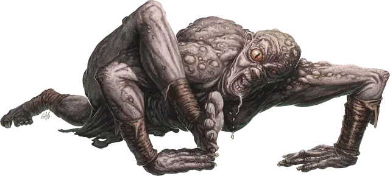

Фомор глубинный падальщик
Fomorian Deep Crawler
Огромный Великан, любое мировоззрение

Класс Доспеха 14 (природный доспех)
Хиты 184 (16к12 + 80)
Скорость 30 футов, лазая 30 футов
| мод | спас | ||
|---|---|---|---|
| СИЛ | 23 | +6 | +6 |
| ЛОВ | 15 | +2 | +2 |
| ТЕЛ | 20 | +5 | +5 |
| мод | спас | ||
|---|---|---|---|
| ИНТ | 9 | −1 | −1 |
| МДР | 17 | +3 | +3 |
| ХАР | 6 | −2 | −2 |
Навыки Восприятие +7, Скрытность +6
Чувства тёмное зрение 120 футов, пассивное Восприятие 17
Языки Великаний, Подземный
Опасность 10 (5900 опыта)
Бонус мастерства +4
Особенности
Акробат. Фомор может входить в пространство, достаточное для Большого существа, не протискиваясь.
Положение для ползания. В то время как фомор сбит с ног, ползание не требует от него дополнительного передвижения. Кроме того, лежание ничком не дает преимущества на броски атаку против фомора.
Паучье лазанье. Фомор может лазать по сложным поверхностям, включая потолки, без совершения проверок характеристик.
Действия
Мультитака. Фомор совершает две атаки Размашистым ударом и использует Проклятие падальщика, если оно доступно.
Размашистый удар. . Рукопашная атака оружием: +10 к попаданию, досягаемость 10 футов, одна цель. Попадание: 22 (3к10 + 6) дробящего урона.
Проклятие падальщика (перезарядка 4-6). Фомор нацеливается на одно существо, которое он может видеть в пределах 60 футов от себя. Цель должна преуспеть в спасброске Мудрости Сл 15, иначе получит 31 (7к8) урона психической энергией, упадёт ничком и станет проклятой на 1 час. Будучи проклятой таким образом, цель не может встать и перестать быть сбитой с ног.
Описание
Происходящие от сына Аннама - Каронтора, фоморы когда-то занимали место в иерархии великанов между холмовыми и каменными великанами. В древние времена они были знатоками магии, известными своим острым интеллектом, но также и своим раздутым эго и чувством собственного достоинства. Каронтор воспользовался этими качествами, соблазняя их обещаниями более высокого положения в Уложении, и подстрекнул своих потомков начать наступление на Царство Фей. Когда атака провалилась, фоморы были изгнаны в Подземье, а их бог заключен в подземную тюрьму. Подвергнувшись странной магии Подземья, тела и души фоморов искажались, пока они не стали современными фоморами.
Фомор глубинный падальщик
Глубинные падальщики — это фоморы, чьи тела приспособились для ползания по туннелям Подземья, возможно, в подражание или в честь Каронтора, “короля, что ползает”. Они обладают длинными и гибкими конечностями, а их хватка достаточно сильна, чтобы они могли лазать по стенам и потолкам.